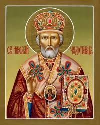
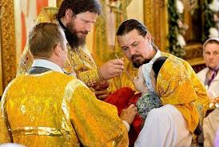
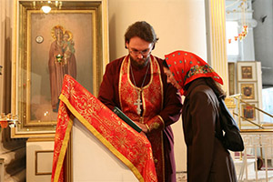
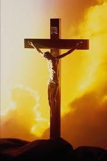
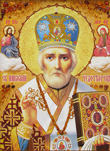
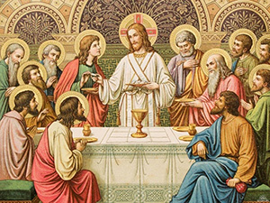
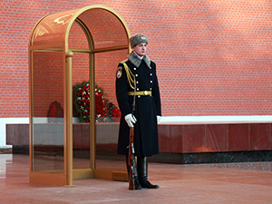
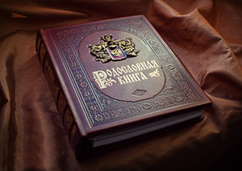
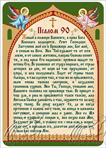
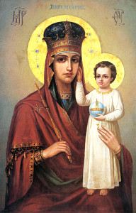

ЗАПИСКИ ПОСЛУШНИЦЫ

Под этой рубрикой публикуются достоверные истории о дивном Промысле Божьем в судьбах людей, в том числе прихожан этого храма
Ворона - кормилица
Сваты моих соседей живут в городе Стрий (Львовская область). Семья имеет частный дом, ходят в храм Божий. Живут они по-совести, как христиане, и еле сводят концы с концами. Молят Бога о достатке в доме.
Однажды поселилась у них ворона, свила себе гнёздышко на столбе и летает по своим вороньим делам. Ведёт себя тихо, спокойно, никому не мешает.
Идёт время, но птенцы всё не появляются, что показалось хозяевам довольно странным.
Одним летним днём, когда ворона улетала, глава семьи поставил лестницу к столбу и посмотрел, что в гнёздышке?
Удивлению его не было предела: там были золотые украшения – серьги, кольца, кулоны. Известно, что эта птица любит золото. Хозяева извлекли драгоценности, а ворону поставили на домашнее довольствие: выделили посуду и кормили тем, что готовили себе.
Сваты благодарили Бога, что он услышал их молитвы и послал им кормилицу.
Банковские мошенники
Девушка покупала свечу в храме, из её глаз капали слёзы. Спросила, кому молиться, если мошенники украли деньги с платёжной карточки.
Дело было так. Светлане на мобильный телефон позвонил незнакомый мужчина. Представился работником службы безопасности банка, в котором она обслуживается. Суровым голосом сообщил, что её карточкой хотели рассчитаться по интернету, поэтому нужно срочно выставить защиту, сообщите свой пин-код.
От неожиданности Светлана растерялась, тревожно стало на душе – на счету лежала приличная сумма денег. Девушка не раздумывая сообщила код.
Через несколько минут после окончания разговора у неё возник вопрос – кому она сообщила свои данные? Светлана тут же позвонила в банк, чтобы заблокировать карточку, но деньги уже были сняты.
Потерпевшая поставила свечку Иоанну воину, попросила его защиты. Она молила Бога вменить ей украденные деньги как милостыню бедным людям.
Как лётчик стал священником
Путь к Богу у каждого свой и часто при этом человек оказывается в экстремальной ситуации.
Эти события происходили во времена Советского Союза на юге страны. Военный лётчик, капитан, успешно служил, отличался высоким профессионализмом, его уважали все за добрую душу, чистую совесть, трудолюбие.
Однажды поступила команда: «На взлёт! Угроза территориальной целостности страны!» Когда боевой самолёт поднялся в воздух, поступил от командования воздушных сил приказ разбомбить колонну беженцев, а это как было сверху видно – женщины и дети.
Не выполнив приказа, крылатая машина вернулась на аэродром. Он положил на стол командованию свой партийный билет, сказал, что не может служить в армии, которая воюет с женщинами и детьми.
Мужчина вернулся в родной город, со временем принял священнический сан и стал ревностным служителем на ниве Божией.
Как Николай чудотворец помог бросить курить

Татьяне в жизни очень мешало пристрастие к курению: на службе, дома, в кругу друзей она чувствовала себя ущербной и твёрдо решила покончить с вредной привычкой. На деле это оказалось не так-то просто.
Тогда Татьяна решила слетать самолётом в Бари, и у мощей чудотворца Николая просить его помощи. Прошлым летом она так и сделала.
В далёкой стране, в храме, она молилась своими словами: «чудотворец Николай, любым способом помоги мне бросить курить!»
Вышла девушка из храма и опять закурила. Новая страна – яркие впечатления, Татьяна вскоре забыла о цели своего визита.
Прилетела девушка в Борисполь, вышла из терминала аэропорта и присела закурить на лавочке возле автобусной остановки.
Вдруг видит, идёт к ней бомж – грязный, одетый в лохмотья и кричит: «Сколько ты стоишь, пошли со мной, у меня есть деньги! Ты же продаёшься, вот и куришь, как последний сапожник!»
Люди на остановке повернулись в сторону Татьяны, слушали, наблюдая эту сцену. А бомж не унимался и продолжал громко обличать. Как вспоминала потом Татьяна, такого позора в жизни у неё не было. Она взяла такси и быстро уехала.
После этого девушка не только сама не курила, но табачного дыма не может переносить.
Сила причастия

Два эпизода из жизни своей семьи рассказала женщина, которая пришла в храм заказать сорокоуст о упокоении новопреставленного раба Божьего Андрея.
Когда её маме исполнилось 88 лет, она тяжело заболела. Медицинская помощь облегчения не дала, и женщина стала готовиться к отходу в мир иной. Она попросила дочь позвать православного священника, поисповедалась, причастилась и, на удивление всем, пошла на поправку. Бабушка не только смогла сама себя обходить, но и помогла домочадцам помыть посуду, приготовить обед и т.д.
Спустя некоторое время заболел её 60-летний зять Андрей. Болезнь серьёзная – онкология желудка. Он лёг в столичную элитную клинику в Феофании. Лечащие врачи – хорошо знакомые больному, высокопрофессиональные специалисты. На предложения жены обратиться к Врачу Небесному больной категорически отказывался.
Андрей прошёл несколько курсов химиотерапии – лекарство ему перевозили из Швейцарии и каждый раз приходилось платить несколько десятков тысяч гривен. Обследование на самых современных диагностических аппаратах показало, что опухоль не операбельна. Спасти Андрея не удалось.
Спасение от пожара

Бытует расхожее мнение, что если в семье есть верующий православный человек, то он обязательно кого-то вымолит из своего рода, хотя бы через поколения. Так и Анна, прихожанка храма, рассказала, что её родители были равнодушны к вере, а вот бабушка всегда ревностно молилась Богу и во всех жизненных ситуациях уповала на милость Божию.
Анна рассказала случай из жизни их семьи, который произошёл во время Великой Отечественно войны.
Она жила в одном из сёл на Полтавщине. Немцы его оккупировали и, заходя в каждый дом, спрашивали, есть ли коммунисты и воюет ли кто из членов семьи на фронте? Наш дед воевал, но его, на счастье никто не выдал из односельчан и семью не расстреляли.
Когда советские войска наступали, фашисты, отходя, подпаливали дома. Уже полыхало несколько близлежащих строений, люди убегали в лес.
Бабушка взяла икону, выбежала с ней во двор и горячо, со слезами, молилась. Ей кричали: «Беги скорее в лес, сгоришь вместе с домом» но женщина стояла как нерушимая стена. Вдруг, откуда ни возьмись, пошёл дождь, пламя стало затухать, а дом ревностной молитвенницы остался невредимым. Потом односельчане приходили сюда ночевать, так как он один уцелел на всей улице.
Путь к Богу
Это случилось в 90-х годах прошлого века, когда распадался Советский Союз, закончилась война в Афганистане.
Сергей, кадровый военный, офицер, служил в пограничных войсках в Таджикистане. Там разгорелась гражданская война – неразбериха во всём, границы открыты и т.д.
Случилось так, что Сергея захватили в плен афганские моджахеды, а они крайне злобно, по-зверски, относились к советским офицерам.
Для начала пленного жестоко побили: выбили челюсть, переломали несколько рёбер. Его в крайне тяжёлом состоянии бросили умирать в камере, потом перетянули в лазарет для военнопленных. Сергей не мог ни дышать, ни говорить, ни пить, ни есть, ему казалось, что доживает последние моменты жизни.
В это время приходит в лазарет седовласый старичок, присел у него в ногах и спрашивает по-русски: «Сынок, ты жить хочешь?» Как мог, глазами, кивками головы он дал знак, мол, хочу! На ту пору Сергею было всего 27 лет.
- Молись Богу! – последовал ответ, - хотя ты, советский офицер, молитву «Отче наш» навряд ли знаешь! Тогда молись своими словами, проси Всевышнего о помощи и будешь услышан!
Сергей последовал совету седовласого спасителя, молился день и ночь, как утопающий хватается за соломинку. Старичок, а он, как оказалось, был в прошлом капитаном царской армии, имел свободный доступ в лазарет и помогал военнопленным – он лечил их глиной (посыпал раны), поил отварами из трав.
Совершилось чудо: через несколько дней Сергей смог пить, понемножку вставал, при этом молитву не оставлял ни на минуту. Он провёл в плену долгих 4 года, бежал, пересёк пять границ без документов, и Господь помог ему добраться до своих. Он вернулся домой глубоко верующим христианином, убеждённым, что Господь в наши дни такой же, как и сто и тысячу лет назад. Просите и дастся Вам!
Сповідь у Бостоні

Катерина прилетіла до американського міста Бостон з питань сучасної сімейної медицини. Вона працювала лікарем в одній з приватних клінік Києва. Безумовно, молода жінка відчувала певні складнощі.
Саме на той час у неї помер батько, на днях йому припадало 40 днів, як він перейшов у вічність. Катерина розуміла важливість молитви саме в той день і вирішила розшукати у Бостоні православний храм. Це їй вдалося, але виявилося, що священнослужителі не володіють ні українською, ні російською мовами.
Втім Катерина прийшла на початку служби до церкви, і протоієрей благословив її у цей день причаститися. У Катерини виник сумнів, як бути із сповіддю, адже на перепоні стає мовний бар’єр. Священик швидко її заспокоїв: «Можете називати гріхи на будь-якій мові. Адже ви говорите їх Господу, а той все розуміє…»
Катерина щиро каялася, називала всі свої навіть потаємні гріхи, і це була її генеральна сповідь. Священик прочитав над нею дозвільну молитву.
Із цього приводу мені припала на думку розповідь колишнього учня духовної семінарії. За його словами студенти найбільше полюбляли сповідатися у священика, який погано чув. Саме до нього завжди були найбільші черги бажаючих сповідати гріхи.
Вдячність
В один із великих православних свят на Різдво Христове раба Божа Надія була у храмі на святковій літургії. Після обіду жінка пішла у найближчий супермаркет, аби купити необхідні продукти та зварити борщ, який любить її чоловік.
В черзі у касу до неї звернувся молодий чоловік, який стояв попереду. Він привітав жінку зі святом і сказав: «Я хочу зробити Вам подарунок – оплачу вартість всієї Вашої покупки!»
Надія від несподіванки розгубилася і навіть забула запитати ім’я свого благодійника. Вона одразу поспішила до храму, поставила свічку і помолилася за цього молодого чоловіка – Бог знає його ім’я!
Як танкіст став архімандритом
Це сталося під час війни у Афганістані. Юрій, як професійний військовий танкіст, майже з перших днів війни опинився у пеклі подій.
Одного разу його екіпаж виконував бойове завдання, ворог чинив шалений опір, сталося пряме попадання снаряду у танк. Машина запалала. Всі члени екіпажу загинули на місці, і лише Юрій із тяжкими опіками у непритомному стані опинився у госпіталі. Його чекало довготривале важке лікування. До речі, виразні шрами на обличчі танкіста потім залишилися на все життя.
Як інвалід війни, Юрій звільнився із Збройних сил. Він розмірковував, що Господь для чогось зберіг йому життя і вирішив решту років послужити Богу. Чоловік пішов у православний монастир, став справжнім воїном Христовим, і дослужився до архімандрита. Нині він перебуває в одному із монастирів південної України. У повсякденному житті цей чоловік відрізняється стриманістю, доброзичливістю, повагою до інших. Відчувається, що він знає ціну людського життя.
Сила животворящого хреста

Одного літнього дня у вагон столичного трамваю увійшли мати із дорослою донечкою. Пасажирки відрізнялися одягом: довгі темні спідниці, голови покриті хустками. Вочевидь, вони були монахинями.
На той час у трамваї їхала компанія юнаків, явно напідпитку. Вони голосно спілкувалися на своєму жаргоні, сміялися. Час від часу хлопці відпускали гострі словечки на адресу чорниць, мовляв, прикро, що у наш час є такі люди. Пасажирки поводилися спокійно і ніяк не реагували. Звичайно, вони подумки молилися.
Особливо зухвало поводився один із юнаків. Раптом він направився до дівчини, щось говорячи до неї. Та спокійно повернулася і перехрестила хлопця. Він відразу впав на підлогу, забився у конвульсіях, із рота пішла піна.
Всі пасажири завмерли у шоковому стані, адже вони на власні очі стали свідками сили животворящого Хреста.
Микола Чудотворець швидкий на допомогу

Раба Божа Галина народилася у Росії, ходила до школи, мала потяг до знань. Вона росла у православній родині, її батьки ходили до храму, а бабуся навчала дівчинку, як треба молитися.
Знання давалися Галині нелегко і вона часто зверталася у молитвах до Чудотворця Миколая, просила його допомоги. Сталося так, що волею долі їхня сім’я переїхала до Києва. Одночасно у Галини виникла проблема із українською мовою.
Одного разу школярці довелося писати диктант з української мови. З перших слів вчительки вона зрозуміла, що текст досить складний і для неї нездоланий. Отже, вона подумки звернулася до Миколи Чудотворця, а той не забарився із допомогою.
Школярка побачила, що у газеті, в якій була загорнута її книга і лежала на парті є саме той текст, який диктують. Галина ретельно його переписала і єдина у класі отримала найвищий бал.
Церковна людина сприймає цю ситуацію, як Промисел Божий, а не випадкове диво, чи збіг обставин.
Святе причастя

Сталося так, що Юрій захворів – проблеми із органами дихання. Юнак попав у стаціонар, але лікування результатів не мало. У п’ятницю хворий здав аналізи крові, отримав невтішні результати. Лікарі не знали, що йому призначити – так все було складно.
Юрій вирішив звернутися до Небесного Лікаря – до Бога, якщо земні фахівці йому зарадити не можуть. Він мав на меті піти у православний храм і причаститися, адже, згадав, як колись священик у храмі пояснював, що причастя необхідно православним християнам, а до Святої Чаши треба підходити у чистоті.
Протоієрей мав на увазі чистоту духовну – позбутися вантажу гріхів на таїнстві сповіді. Втім, Юрій сприйняв все це у буквальному розумінні: вранці він прийняв душ і поголився. Потім він пішов на літургію і причастився (без сповіді). Та все ж, благодать Божа його торкнулася, адже для неї немає перешкод.
У понеділок він знову здав аналізи – вони були чудовими. Лікарі ніяк не могли зрозуміти, у чому справа. Відтоді минуло чимало років, Юрій став повноправним членом православної парафії одного із храмів і завжди ретельно готується до святого причастя, очищуючи душу у таїнстві сповіді.
Шлях до спасіння у кожного свій
Надія досить успішно продала дачу. Певну частину коштів, а це кілька тисяч євро вона віддала протоієрею православного храму, прихожанкою якого вона була. При цьому жінка попросила, щоб священик молився за її сина Андрія, який боліє.
Від того часу минуло кілька років, настоятель витратив гроші на потреби храму: зробив ремонт, закупив деяке церковне начиння, тощо.
Одного разу Надія прийшла до священика і почала вимагати свої гроші назад, мовляв, як хворів її син на цукровий діабет, так і хворіє. Ніякі пояснення, що настоятель молився за спасіння душі Андрія жінка не сприймала.
Вона звернулася із заявою до правоохоронних органів про порушення кримінальної справи щодо шахрайства. Надія сприймала храм як бюро добрих послуг: гроші заплатила – і бажане отримала.
У духовній сфері діють інші закони. Невиключно, що хвороба сина – єдиний шлях до спасіння його душі. Ледь вдалося жінку переконати у неправоті своїх дій.
Лікує святе джерело
Вже не перший рік Світлана ходила до храму і чула про цілюще джерело на честь Казанської ікони Божої Матері, яке розташоване у чоловічому монастирі неподалік села Чоповичи Малинського району, що на Житомирщині (урочище Кип’яче). Їдуть сюди люди звідусіль за зціленням, адже реальні факти свідчать про його цілющу силу.
Одного разу Світлана із групою паломників також поїхала до цієї святині у Кип’яче. Вже багато років жінка страждала запаленням середнього вуха, хвороба набула хронічного характеру. Лікарі категорично заборонили його мочити, та все одно, час від часу, хвороба давала про себе знати. Світлана із цікавістю спостерігала, як паломники у сорочках тричі занурювалися у джерело. Сталося так, що жінка вирішила хоча б намочити ноги, та послизнулася на східцях і занурилася у воду.
Від тої пори пройшло понад 15 років, але того дня Світлана назавжди позбулася своєї недуги.
Рятівний шлях

Сергій проходив службу у збройних силах в роті почесного караулу. Стрункий, високий юнак сумлінно ніс службу, був прикладом для інших. У рідному селі поверненню Сергія всі зраділи. Одного вечора його бабуся зібралася до церкви, а юнак визвався її провести. Так і йшли вони удвох селом.
Почалася служба. Сергій зайшов до храму. Бабуся молилася, клала поклони, хрестилася. Вочевидь, все це було її життя. Сергій простояв 15 хвилин і відчув, що далі перебувати у храмі не може, неначе якась таємна сила йому перешкоджала. Це здивувало хлопця, адже він міг стояти на службі кілька годин нерухомо, а тут відбувалося щось неймовірне.
Бабуся прокоментувала це так: «У церкві діє благодать Святого Духа і до Господа треба йти із чистою душею. Спаситель призиває покаятись у таїнстві сповіді, ретельно переосмислити своє життя та йти вузьким рятівним шляхом».
Родова книга

У церковній лавці жінка підбирала вінчальні ікони для сина, який на днях одружувався. Вона хотіла купити ікони писані, дорогі. Між іншим, прихожанка розповіла про своє життя, мовляв, весь час вона відчувала милість Божу. Дідусь був священиком, мучеником за віру, адже його у безбожні часи розстріляли в олтарі православного храму. Мама, лікар за фахом, прожила 96 років.
У цій сім’ї велике значення приділяли так званій родовій книзі, якій нараховувалося понад 500 років, і вона, як дорога реліквія, передавалася із покоління в покоління. У цьому рукописі значилося: хто коли народився, з ким одружився і т.ін. – всі значимі події роду. Відчувалося, що цей рід складався із віруючих християн, які займали високі посади у суспільстві, жили заможно. Були у книзі й параграфи, які обговорювали, чого не можна робити, приміром, аборти.
Це було сильним стримуючим фактором, адже ніхто не хотів, щоб із нього починався родовий гріх.
Сталося так, що мама відчула себе вагітною у 50 років. Колеги – лікарі її переконували перервати вагітність, мовляв, у такий вік можна народити неповноцінне немовля. Мама пам’ятала родову книгу і поклалася повністю на милість Божу.
Жінка народила здорову, гарненьку донечку, яка росла на радість батькам. Згодом дівчинка вивчилась на лікаря та стала високопрофесійним фахівцем, і скрізь їй Бог допомагав. Приміром, як медика її направили на 15 років по лінії Червоного Хреста працювати до Франції. В результаті жінка має додаток до щомісячної пенсії понад 700 дол. США від цієї країни.
От і нині її син одружується на донечці священика, і родовід продовжується.
Рятівна молитва

Прихожанка храму, вчителька за фахом, розповіла мені, як вона позбулася грипу в період епідемії.
Галина захворіла раптово. Дорогою додому відчула нежить, її знобило, неначе викручувало м’язи. Вдома жінка відразу поміряла температуру: більше 40 градусів.
Наступного дня хвора викликала дільничного лікаря, який не вагаючись поставив діагноз – грип. Він виписав ліків на суму понад 1300 грн. і Галина почала їх ретельно пити, але полегшення не наступало.
Хвора відчувала запаморочення, втім, зусиллям волі примушувала себе молитися – читала вголос 90-й псалом, який давно знала напам’ять «Живий в помочі…» Бабуся ще в дитинстві не раз розповідала Галині, як ця молитва на війні врятувала життя діду.
Чотири дні тривала боротьба з недугою, і нарешті вона відступила так само раптово, як і почалася.
А із дідусем трапилася така історія. Тривала Велика Вітчизняна війна. Коли дружина проводжала на фронт чоловіка, то зашила в одяг псалом 90-й. Бійця це вочевидь рятувало, навіть із найнебезпечніших ситуацій він виходив живим. Ті, хто воював разом із ним, лише дивувалися. Про «секрет» хоробрий солдат розповів лише своєму найближчому другу, той і собі переписав цю молитву.
Одного разу під російським селом Крюково їхня рота потрапила в оточення. Німці безпощадно знищували всіх, і лише двоє солдат, дідусь із своїм другом, опинилися у болоті і дві доби просиділи у воді, дихаючи через соломинку. Залишилися живими.
Як моряк став послушником у монастирі
Сергій вже багато років ніс службу на кораблі капітаном далекого плавання. Справу свою любив, мав відзнаки за сумлінну працю.
Із настанням смутних часів та розвалом економіки чоловік став безробітним. Він погоджувався на будь-яку роботу, мовляв, руки та ноги працюють, то й пішов на будівництво, бо там ще платили. Втім, недовго довелося йому робити у новій сфері – Сергій поламав руку. Так як він не мав сім’ї, то для нього настали складні часи – чоловік став зовсім безпорадним, навіть харчування перетворилося у велику проблему. Сергій впав у відчай.
Допоміг йому приятель із Києва. Той домовився із священнослужителями столичного Введенського монастиря (Печерський район), що Сергій буде приходити туди на трапезу. Жити моряк став на судні, яке стояло на Дніпрі.
У святій обителі йому сподобалося: харчування завжди вчасно, чисто, смачно. Рука із часом почала загоюватися. Сергій інколи пропонував свої послуги, приміром, винести сміття, прибрати посуд і т.ін.
Одного разу він став свідком того, як монахині із великими зусиллями намагалися розрізати великого сома. Сергій став допомагати, адже мав досвід у цій справі. Він намазав сома гірчицею, щоб той не був слизьким, і швидко та майстерно розрізав рибу на рівні шматочки.
Монахині із цікавістю спостерігали за його діями. Капітану відразу запропонували залишитись у монастирі, відвели окрему келію і благословили на розділку риби.
Так як монахи не вживають м’яса, то рибних страв завжди готувалося багато і роботи вистачало.
Рибою доводилося займатися переважно вночі, аби на ранок вона була готова. Сергію подобалося жити у монастирі, він завжди відчував до себе добре ставлення та підтримку і поступово став привертатись до православної віри, та й дивні речі тут нерідко траплялися із ним.
Одного разу він довго шукав свого ножа, та все марно, почав нервувати. Монахиня Нектарія порадила Сергію звернутися за допомогою до чудотворної ікони Божої Матері. Капітан помолився перед цим образом, повернувся до трапезної, і відразу знайшов пропажу.
Згодом життя Сергія змінилося. Він став церковною віруючою людиною, справжнім християнином.